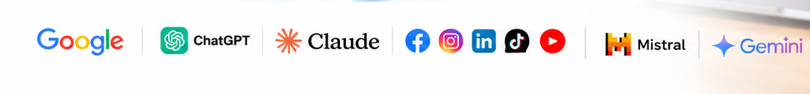

SEO et GEO
Nous améliorons votre position sur Google et votre présence dans les réponses des assistants IA, avec un contenu clair et une base technique solide.
Depuis plus de 15 ans, MinoSeo accompagne les entreprises dans leur visibilité en ligne : référencement SEO et GEO, netlinking, community management, saisie de données et BPO. Des prestations proposées, à des prix raisonnables.

MinoSeo est une agence spécialisée en référencement naturel (SEO), en optimisation pour les moteurs de réponse IA (GEO), en netlinking et en community management. Nous prenons aussi en charge vos tâches de saisie et d'externalisation (BPO) pour vous laisser vous concentrer sur votre métier.
Notre méthode : un diagnostic clair, des actions priorisées, et des comptes rendus que vous comprenez. Vous savez toujours ce que nous faisons, pourquoi, et ce que cela vous apporte.
Nous améliorons votre position sur Google et votre présence dans les réponses des assistants IA, avec un contenu clair et une base technique solide.
Des liens de qualité depuis des sites pertinents, pour renforcer votre autorité de façon durable et sans risque.
Une présence régulière et cohérente sur vos réseaux sociaux, pour fidéliser votre audience et nourrir votre image de marque.
Saisie de données, traitement de fichiers et tâches administratives externalisées, avec rigueur et confidentialité.
Le SEO rend votre site visible dans les résultats de recherche. Le GEO fait en sorte que les assistants IA vous citent dans leurs réponses. Le netlinking, lui, obtient des liens depuis d'autres sites, un signal de confiance pour les moteurs.
Être mieux positionné sur les moteurs de recherche.
Être compris et cité par les moteurs de réponse IA.
Développer l'autorité grâce à des liens pertinents.
Plus de 15 ans de pratique sur l'évolution des moteurs de recherche.
Une stratégie adaptée à votre secteur, vos objectifs et votre budget.
Des explications simples et des rapports lisibles, sans jargon inutile.
Un excellent rapport qualité-prix, sans frais cachés.
Nous analysons votre site, vos concurrents et vos objectifs pour établir un point de départ précis.
Nous définissons ensemble les actions prioritaires, avec un calendrier et un budget clairs.
Nous réalisons les optimisations, les contenus, les liens et les publications prévus.
Nous suivons les résultats, vous les expliquons et affinons la stratégie chaque mois.
Des explications claires à chaque étape et un trafic qui progresse mois après mois.
Un partenaire sérieux, réactif, avec des tarifs vraiment raisonnables pour la qualité fournie.
Le netlinking et la gestion de nos réseaux nous ont fait gagner en visibilité et en temps.
Le SEO optimise votre visibilité dans les résultats des moteurs de recherche comme Google. Le GEO (Generative Engine Optimization) vise à ce que les assistants IA, comme ChatGPT ou Gemini, vous citent dans leurs réponses. Les deux se complètent.
Il s'agit d'obtenir des liens vers votre site depuis d'autres sites de qualité. Pour les moteurs de recherche, ces liens sont une recommandation qui renforce votre autorité.
Les premiers effets apparaissent souvent après quelques mois, selon votre secteur et votre point de départ. Nous vous donnons une estimation réaliste dès l'audit.
Nous prenons en charge des tâches répétitives : saisie de données, mise à jour de fichiers, traitement de documents. Vous gagnez du temps, nous garantissons la fiabilité.
Écrivez-nous ou appelez-nous. Le premier échange et l'audit initial sont gratuits.
Décrivez-nous votre projet : nous revenons vers vous avec un audit gratuit et une proposition claire.
Demander un audit gratuit